Rahul DasProduct designer · BengaluruDesigning since 2013
Staff UX Designer · LegalZoom
Designing productsfromUS small businessesto India’s next billion.
I’m Rahul, a product designer in Bengaluru. I lead consumer design at LegalZoom, helping American families and small business owners with legal tasks. Before that I designed at SIXT, Meesho, Myntra, Treebo and SignEasy, for first-time online shoppers, local travellers and the operations teams behind them.
Thirteen years, seven teams
From running my own design studio to leading design for US small businesses and India’s next billion. Click a company below to view its case studies.
Online legal services for US families and small businesses. I lead consumer design initiatives, from estate planning to how small business owners get legal help online.
A product director and 2 senior PMs, a program manager, 13 engineers, a senior UX designer and a 6-person fulfillment and care team.
summarizeThe short version
LegalZoom pioneered DIY estate planning, and nearly 2 million Americans have an active estate plan created with it. But by 2023 the product hadn’t meaningfully changed in years, and newer, simpler rivals were winning customers.
We fixed the experience in two acts. Before purchase, people couldn’t work out which plan they needed, so they hesitated and left. After purchase, they faced a long, repetitive questionnaire and days of manual review, so they gave up or asked for refunds. Solving both took conversion from 2.9% to 5%+ and halved the time to finish a plan.
descriptionEstate planning in a nutshell
Estate planning is how someone decides what happens to their assets and care after death or during incapacity, so their wishes are honored and their family is protected. A typical plan includes:
history_eduA last will, or a living trust that avoids probate court
account_balanceA financial power of attorney
medical_servicesA medical power of attorney (healthcare directive)
reportWhy it mattered to the business
trending_down
Losing search traffic. Organic traffic kept falling as Trust & Will and FreeWill gained market share through 2022–23.
shopping_cart_off
Fewer people buying. Website conversion dropped sharply, from ~4% to 2.9%.
hourglass_top
Slow, error-prone orders. Orders with issues took 25.9 days to resolve, and refunds climbed as high as 18%.
leaderboardWhere LegalZoom stood
Competitors fell into two groups: platform players like LegalZoom and Rocket Lawyer, which cover every legal need, and pure-play apps like Trust & Will and FreeWill, which only do estate planning. The pure-play apps had modern interfaces, far shorter questionnaires and clearer pricing, and that is where customers were going.
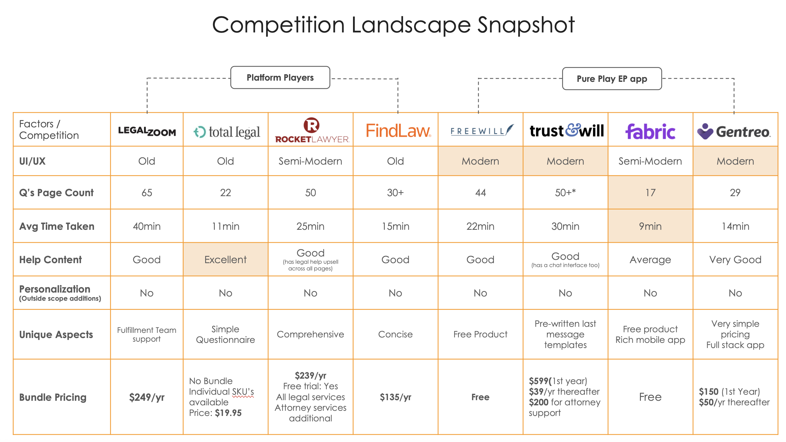
LegalZoom had one of the longest questionnaires and an outdated interface, at a premium price
Act 1
Before purchase: helping people choose
person_searchListening to customers
We interviewed 12 customers (5 Gen X, 7 millennials), including a creative director, an IP attorney and a teacher, and watched them shop for estate plans on LegalZoom and Trust & Will. We wanted to understand what triggers someone to make a plan and how they decide what to buy.
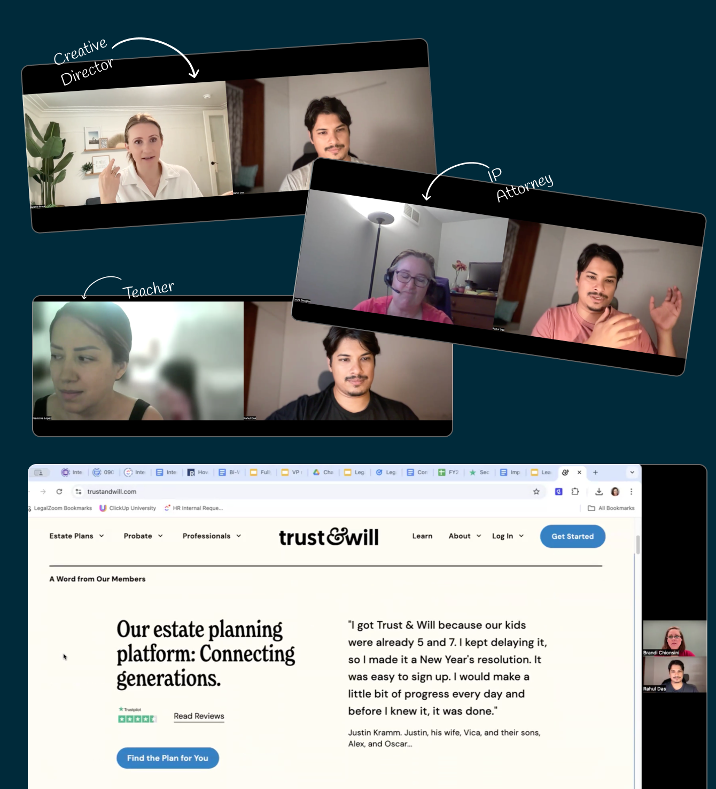
Remote sessions with customers comparing LegalZoom and Trust & Will
Three things stopped people from starting:
helpThey didn’t know what they needed. Will, trust, power of attorney: people couldn’t tell the documents apart and wanted guidance, ideally from an attorney.
cloudThe process felt vague. Unclear guidance on documents, asset distribution and consequences made it overwhelming, so people went looking for “how it works” before committing.
scheduleThey didn’t think it was time yet. Younger people and those with fewer assets weren’t sure when to start or what was involved.
sellWhat the old pricing page got wrong
Funnel data told the same story. Visitors spent nearly 45 minutes on the landing page before buying, most of it on plan selection. Price-sensitive customers anchored on the cheaper plan without checking whether it fit, and Care heard the same confusion on calls.
lightbulbDecision 1: Settle “will or trust” before “basic or premium”
In a joint sprint with product marketing and product management, we rebuilt the plan picker around how people actually decide. First you choose between a will and a trust, which is the question that matters most. Then a side-by-side Basic vs Premium comparison makes upgrading feel like a reasonable step, not an upsell.
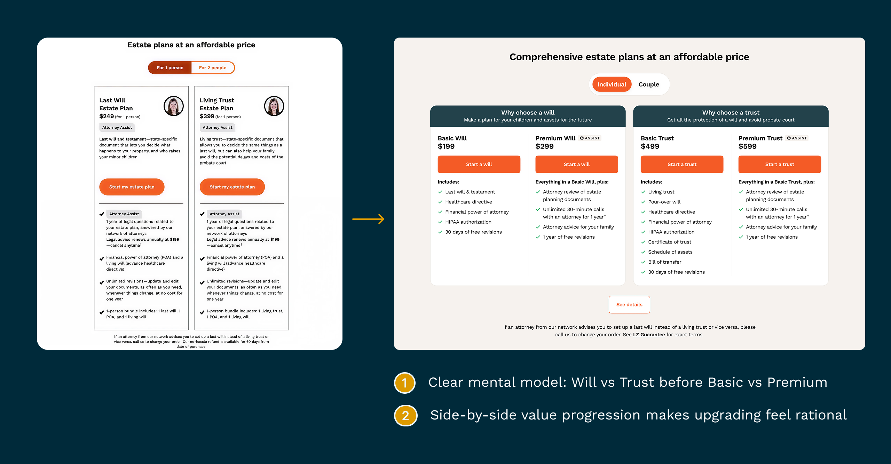
Before → after: one clear decision at a time, with prices anchored side by side
blockWhat we didn’t ship. A marketing-led comparison table was dropped after leadership review because it overloaded people with information. A benefit-led version was set aside in favor of plain feature lists, which made the plans easier to compare.
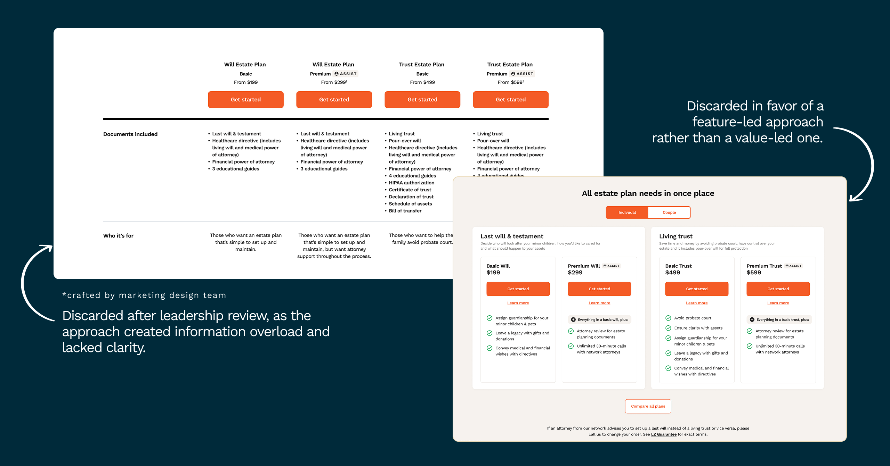
Two directions we explored and set aside
verified_userDecision 2: Earn trust before asking for money
Estate planning is personal, and most people buy it in a hurry: about 60% of customers create a plan under some kind of pressure. So the landing page had to reassure as much as it informed:
callA direct line to book a free discovery call
gavelA plain-language “Will vs Trust” explainer in place of legal jargon
checklistA benefits table to weigh the plans against each other
reviewsReviews, the 4.2M+ documents created and 20+ years of credibility
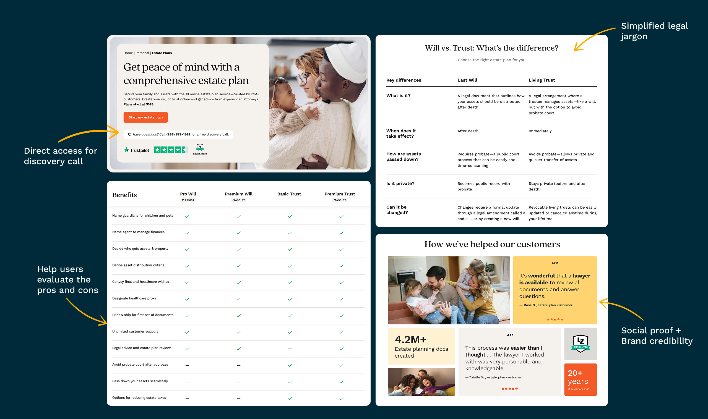
Trust-building modules on the new landing page
boltDecision 3: Make checkout one step
The old checkout spread personal questions, contact details and payment across several pages. We collapsed it into a single “confirm and pay” screen with instalment options, so a decided customer could buy in under a minute.
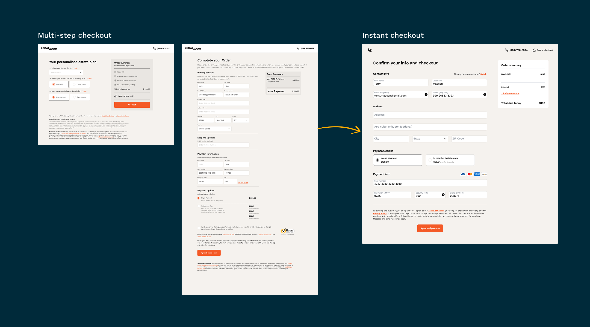
Multi-step checkout → instant checkout
insightsAct 1 results
A 15-day A/B test with new visitors gave a clear answer:
trending_upConversion rose from 2.9% to 5%+ on web, which carries most of the traffic
rocket_launchA 38% relative lift in customers starting an estate plan
payments12% higher 1-year LTV, as more people confidently chose plans that include attorney access
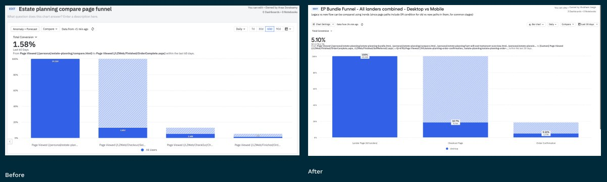
Funnel before (left) and after (right) the redesign
Act 2
After purchase: helping people finish
quizThe real product was the questionnaire
Buying was only the start. A single-person bundle meant filling in 3 separate questionnaires, each asking for the same personal and family details again, across ~120 pages. People under time pressure or grief abandoned it, and many asked for refunds.
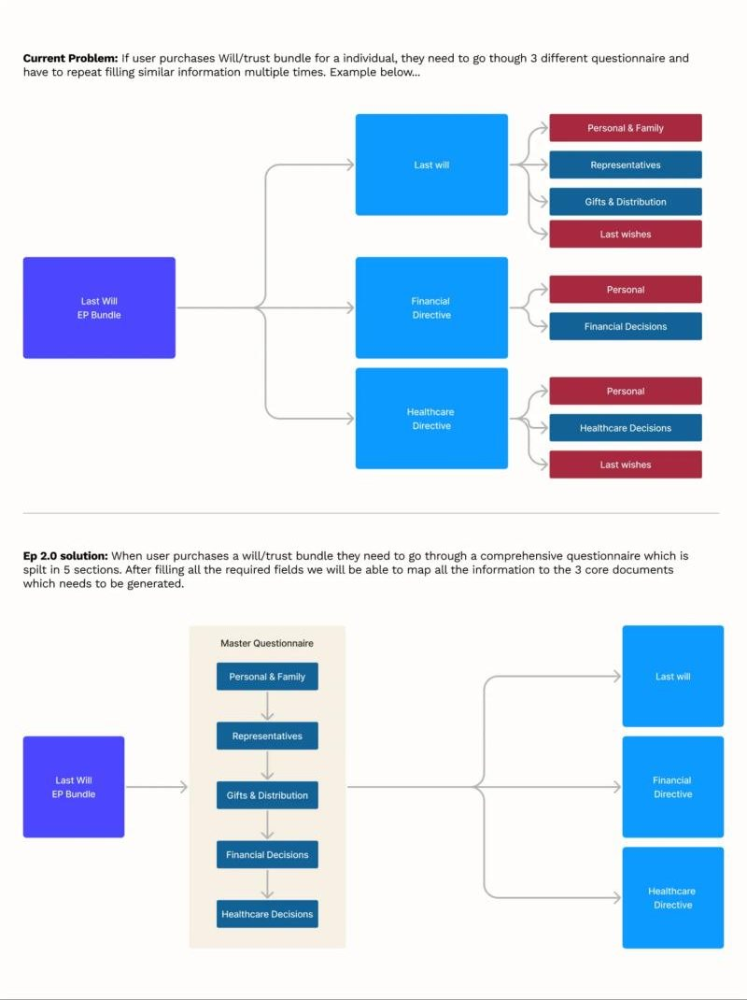
Three questionnaires with repeated sections → one master questionnaire for all three documents
Behind the scenes, every submission was reviewed by hand. Any mistake meant the fulfillment team chasing the customer by phone or email before anything could ship. Only 3% of living trusts and 56.4% of last wills went through without an error.
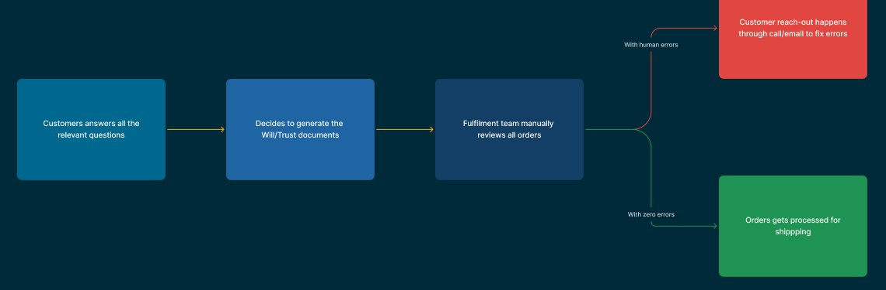
Every order went through manual review, so every error added days
Our audit found three root causes:
content_copyRepetition. Most personal and family questions were asked more than once.
account_treeNo decision logic. Changing an answer had unclear effects on later questions.
ruleManual validation. Errors were caught by people instead of the product, which meant long turnaround and poor CSAT.
dashboard_customizeDecision 4: One master questionnaire
Over a 15-day workshop with legal counsel, we mapped every question across the three documents and rebuilt them as one questionnaire in five sections: personal and family, representatives, gifts and distribution, financial decisions and healthcare decisions. Answers are entered once and mapped to all three documents, and conditional logic only shows what’s relevant.
Required questions dropped from 120–160 to 60–72, without losing legal precision.
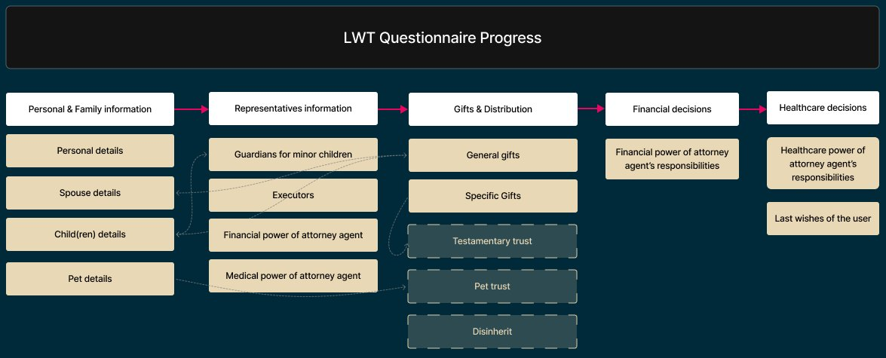
The new questionnaire structure, with answers reused across sections
psychologyDecision 5: Prevent errors instead of fixing them
We looked at what caused order corrections and designed each one out of the flow:
badgeNames:30% of corrections came from mismatched names, so names are captured once, in a structured way, and reused everywhere.
home_pinAddresses:10% of corrections came from wrong addresses, so we added field-level address validation.
edit_noteFree text: people wrote instructions like “David will probably get most of it, but Allison or Lauren may want a specific item.” Guided choices replaced open text boxes for gifts and distribution.
ruleBusiness rules:40+ new validations now catch legal and compliance issues as people type.
local_shippingDecision 6: Answer “Where is my order?” before people call
50% of care calls were about order status. The new MyLZ dashboard shows progress through the questionnaire, document status and delivery, and lets customers confirm their shipping date and address themselves.
add_shopping_cartDecision 7: Offer help at the moment it’s needed
Rather than pushing add-ons at checkout, we offered them in context: spouse protection for married customers, and attorney plans at complex steps like asset distribution.
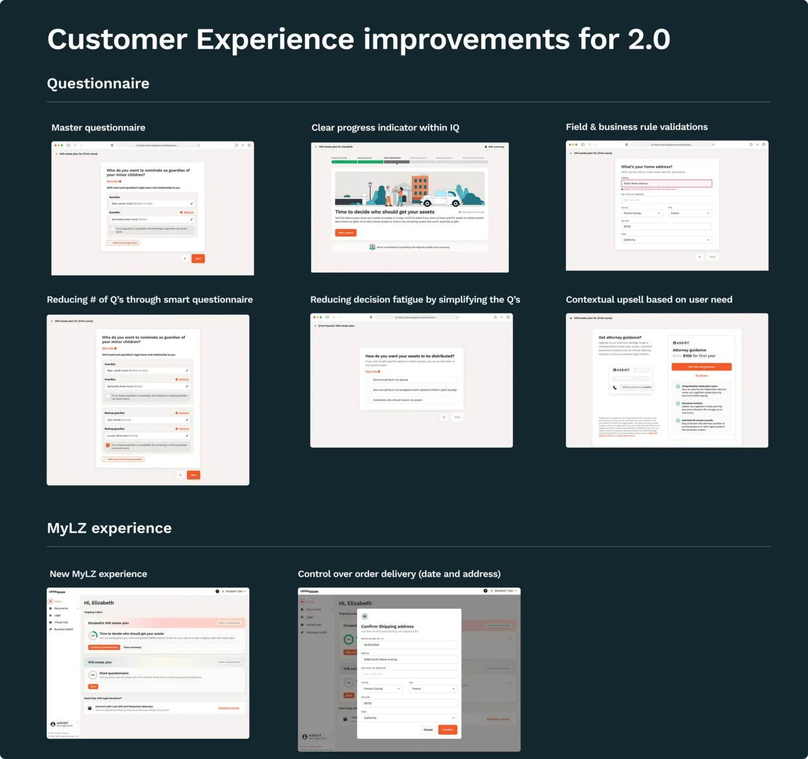
Key screens from the rebuilt questionnaire and MyLZ
insightsAct 2 results
We rolled the new experience out gradually over 3 months. Once it reached everyone:
Customer experience
Same-day completion 65% → 84%
Average completion time 50+ → 25 min
Questionnaire completion 54% → ~79% for wills, 45% → ~65% for trusts
~80% of orders completed without friction
Business health
Refund rate 9.2%+ → 5.8%
Add-on attach rate 14.7% (spouse add-on and subscriptions)
Average order value $159 → $162
40+ validations reduced fulfillment workload
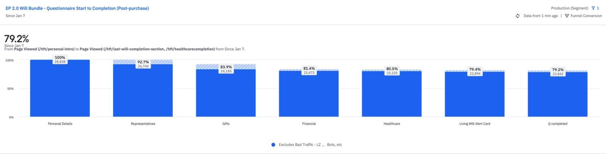
Questionnaire start-to-completion after launch: 79.2%
Customers who tried both versions saw the new one as clearly better and more modern, especially compared to the Couples premium plan, which still ran on the old stack.
constructionWhat made it hard
lockA rigid system. A global design system and questionnaire framework meant new patterns went through many review cycles, which stretched the timeline.
descriptionFixed document templates. The vendor partner wouldn’t change how information was parsed and structured, so we had to design around it.
historyNo decision log. After 20 years of contributions from many designers, PMs and marketers, working out why things were the way they were took real detective work.
schoolWhat I’d take to the next project
alt_routeDesign the decision, not the page. The biggest conversion gain came from reordering one choice, not from a new visual style.
shieldPrevention beats correction. Every error designed out of the flow saved a call, a delay and sometimes a refund.
handshakeBring legal in as co-designers. Working side by side with counsel let us halve the questions without giving up precision.
menu_bookLeave a decision log behind. We documented why things changed, so the next team won’t have to reverse-engineer it.
Managing returns for India’s largest fashion e-commerce
Rethinking the reverse supply chain to restock returned items faster and stop inventory leaking away, by keeping every step simple for the people on the floor.
Product designProcess evaluationSupply chain
assignment_return~24%Of orders returned, month on month
timer~15 days99th percentile time to restock inventory
track_changes~90%Of returned items tracked across the chain
local_laundry_service60%Adoption of digital refinishing
mouse−4 clicksPer item at the quality check desk
My role
Led experience design for returns management from Oct 2019 to Jan 2020, working with one junior designer.
Team
Front-end and back-end developers, a product manager, several operations managers and warehouse admins.
Rollout
Released in phases from Jan 2020, and live in every return processing centre by Mar 2020.
summarizeWhy returns matter
Returns have long been the nemesis of e-commerce and retail. Every returned or exchanged product adds supply chain cost, and often it can’t be resold at full price because of damage, wear or simply time passing. That is a particular problem for fashion and seasonal stock.
As India’s largest fashion e-commerce platform, Myntra handled a returns rate of around 24% month on month, and the volume grew as the business scaled. Leadership set a goal to improve inventory health, and product leaders turned it into a target: restock 99% of returns within 15 days.
reportThe problem
Returns management is complex. The reverse supply chain mixed system and offline flows, which made it slow and hard to manage. The key business issues were:
timerSlow closure. The returns closure SLA was abnormally high, so restockable (Q1) items reached inventory late.
visibility_offPoor visibility. Returns were hard to trace across the many systems involved at each leg of reverse fulfilment.
cloud_offOffline gaps. Parts of quality check at the return processing centre (RPC) happened entirely offline.
ruleInconsistent decisions. Quality check was subjective, so deciding between restock (Q1) and liquidation (Q2) varied by person.
flagObjectives
hubScale to return processing hubs in different locations with different processing needs
routeStreamline returns processing and tracking end to end, from the logistics partner to the return location
devicesDigitize the refinishing flow so it is visible as part of quality check
person_searchWho we designed for
We visited the Bengaluru RPC several times. We interviewed the head of operations about visibility and productivity, spoke with floor supervisors about gaps in the process, and shadowed workers to see how they understood the digital tools.
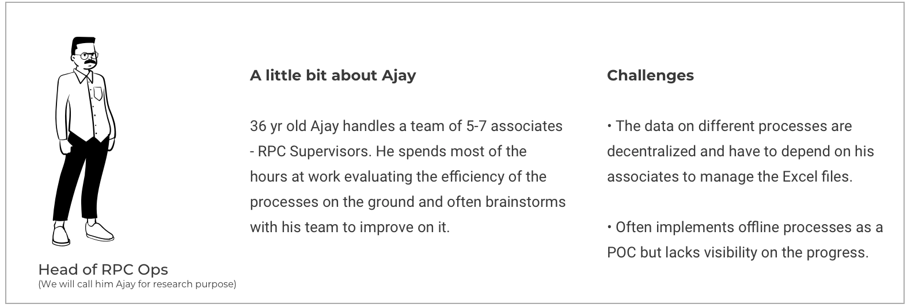
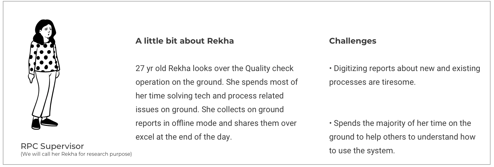
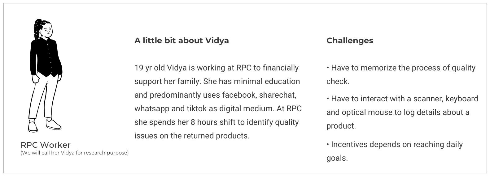
Three people, three very different relationships with the tools
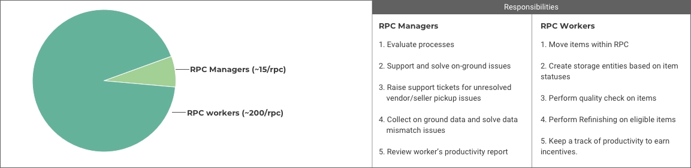
Manpower at a return processing centre: ~15 managers and ~200 workers
factoryInside the returns hub
The Bengaluru RPC, Myntra’s second-largest, covers 20,000 sq ft, runs 24×7 and holds about 300 workers per shift.
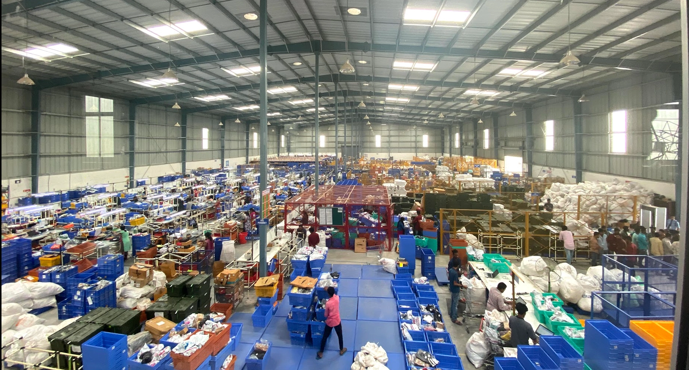
The Bengaluru return processing centre
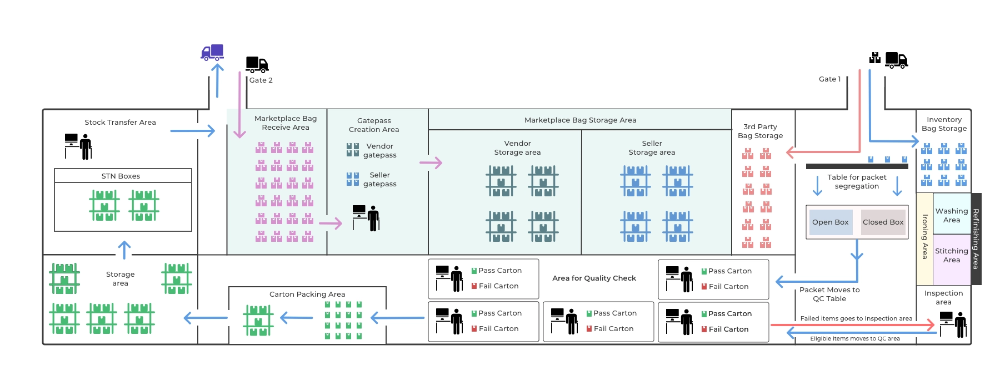
Blueprint of the hub. Follow the arrows to trace an item’s journey.
The journey
Following a return through the hub
package_21. Pickup from the customer
When a customer requests a return in the Myntra app, a delivery partner collects the package after a quick check that the product matches and the brand tags are intact.
local_shipping2. Getting returns to the hub
There are two kinds of pickup. 92.5% are open-box: the customer tried the product and returned it after finding an issue. About 7% are closed-box: the order was rejected or cancelled before delivery. The remaining 0.5% are shipped back by customers themselves.
At the distribution hub, items are consolidated into master bags and trucked to the RPC. Gate 1 receives Myntra’s own inventory (90% of returns). Gate 2 receives marketplace items from vendors and sellers (10%) and sends items back to the warehouse for restocking.
qr_code_scanner3. Receiving master bags
Master bags were logged at a desk near Gate 1 using a desktop app that tracked the handover between logistics and the hub.
Challenge
Bags were moved from the truck to the desk before being recorded, so data wasn’t captured in real time and items went missing.
Solution
A mobile web app on handheld scanners, so workers receive master bags straight from the truck.
Metric
Data accuracy from pickup to RPC receipt, and space utilization.
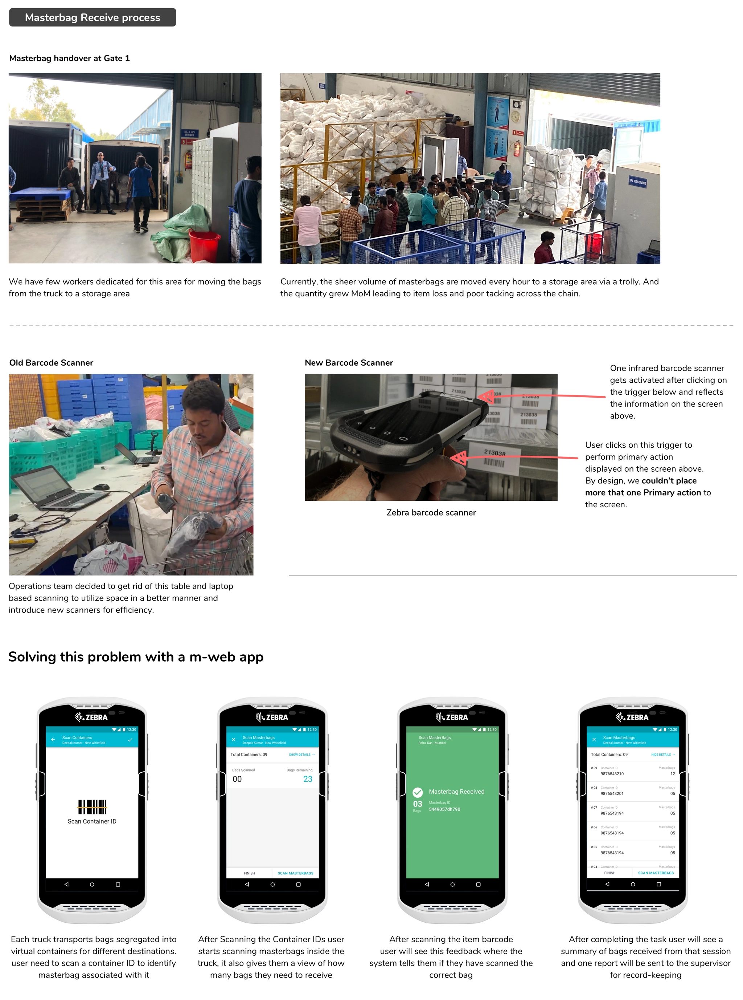
From a laptop at a desk to scanning on the go
sort4. Segregating and sorting items
Once opened, items were split into open-box cartons, which go on to inspection, and closed-box cartons, which are recorded and restocked, usually without quality check.
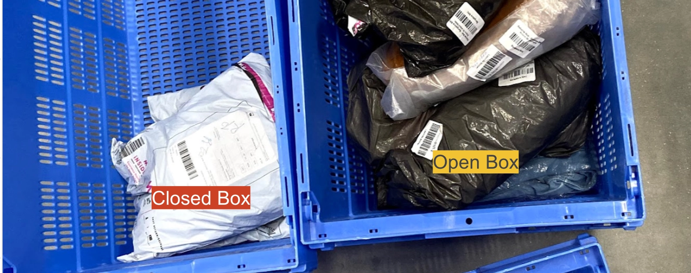
Challenge
Clothing, footwear and accessories went to quality check in the same carton. QC workers specialize by category, so mixing them hurt productivity.
Solution
Sort by article type after segregation, in two modes, inventory and marketplace. The result decides which lane each return takes next.
Metric
Fewer items lost after receiving.
Every return must carry a return ID or tracking ID barcode so it can be processed from the first sorting screen.
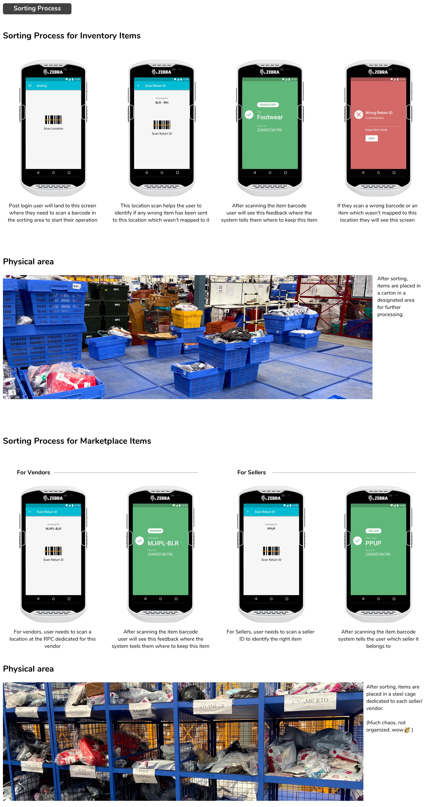
Sorting flows for inventory and marketplace returns
fact_check5. Simplifying quality check
Open-box items go to the QC desk, where workers inspect them and record the result. Items are then marked Q1 (eligible for restocking) or Q2 (marked for liquidation) and moved on in cartons.
Challenge
Workers had to remember every pass or fail condition. With little training, mistakes put poor items back into inventory.
Solution
Role-based access to quality check, fewer mouse interactions and better tracking of which item goes into which carton.
Metric
Higher productivity and fewer poor items restocked.
The old flow took four clicks per item: scan the packet ID, inspect the product, print a barcode to link it to the warehouse database, then move it to a carton.
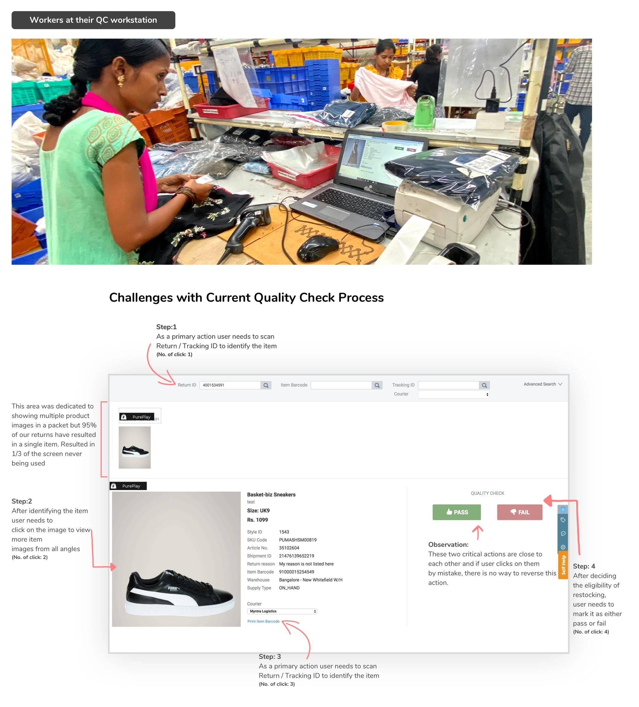
The old QC desk and its four clicks per item
Workers are paid incentives on items processed per hour, with a target of about 30 items an hour, or roughly 2 minutes each. Each extra click cost about 6 seconds per item. Saving 3 minutes per desk every hour adds up across the whole chain.
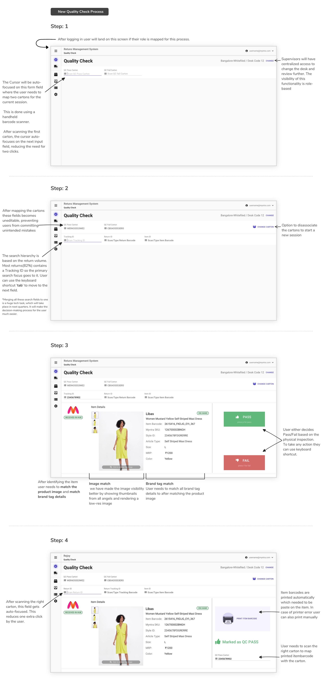
The new QC flow: scan cartons once, auto-focused fields, keyboard shortcuts and automatic barcode printing
local_laundry_service6. Digitizing refinishing
Refinishing means refurbishing products, for example by stitching, spot-washing, steaming or ironing, so they can be restocked.
Challenge
Refinishing was entirely offline. It began as a pilot at one RPC, and the business approved scaling it to improve inventory health.
Solution
Digitize the whole refinishing process so item movement inside the RPC is visible.
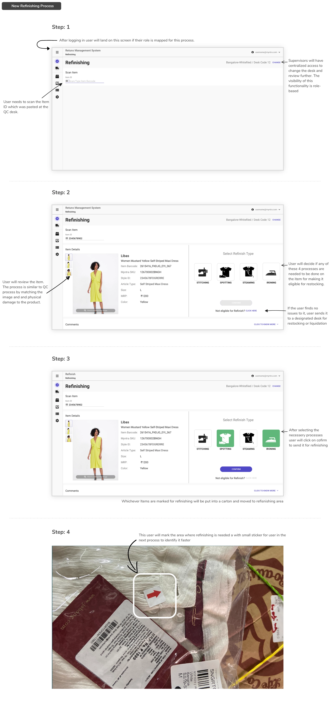
Choosing what each item needs: stitching, spotting, steaming or ironing
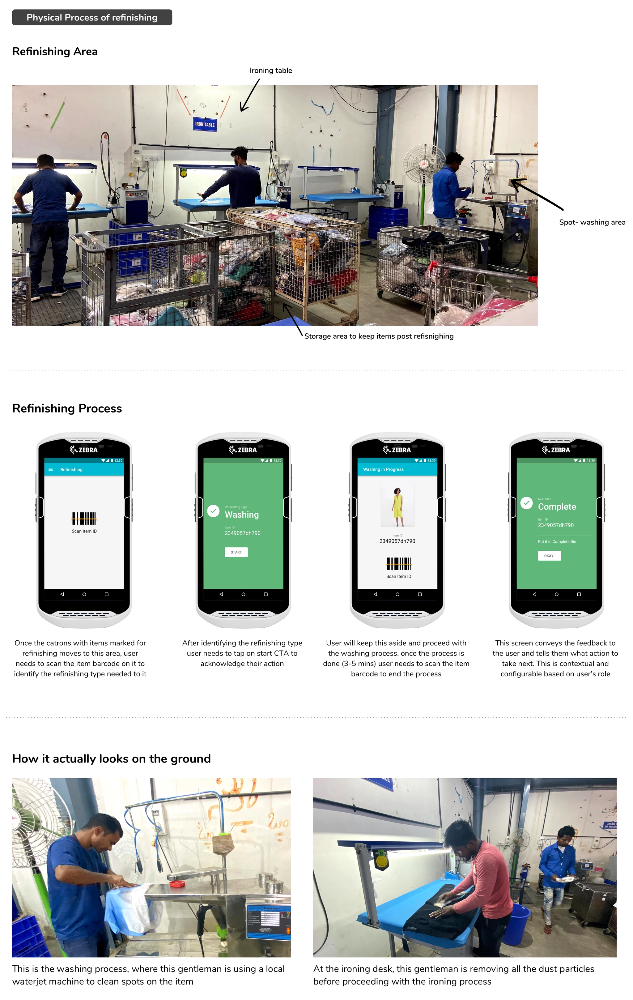
The refinishing area and the handheld flow used there
warehouse7. Moving items back for restocking
After QC and refinishing, items are packed in the stock transfer area and sent to the warehouse.
Challenge
An old desktop tool handled both packing items into cartons and grouping cartons into a stock transfer note (STN). The gap between the two steps led to lost items.
Solution
Split carton packing and STN creation into separate steps, and track cartons from the RPC to the warehouse.
Metric
Shorter time from QC to restock.
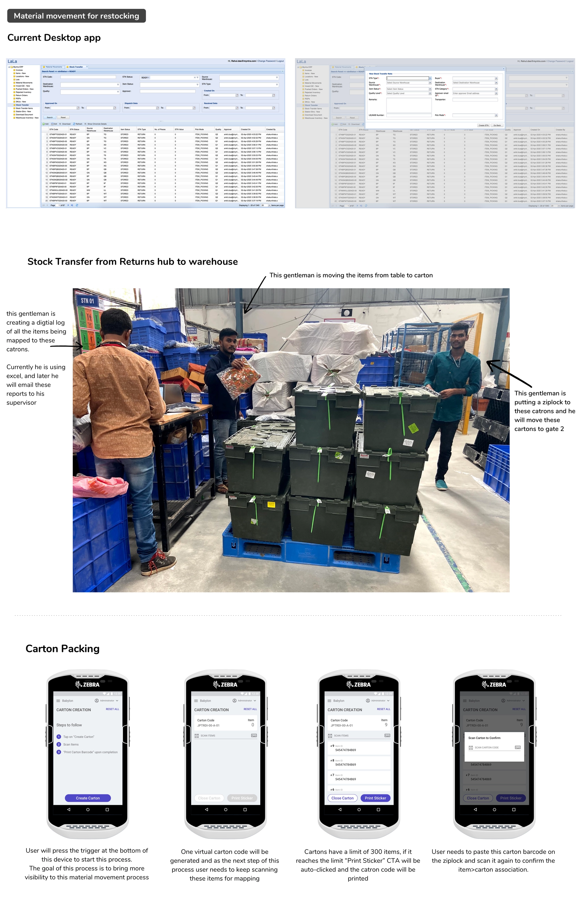
Carton packing moved from a spreadsheet and desktop app to handheld scanners
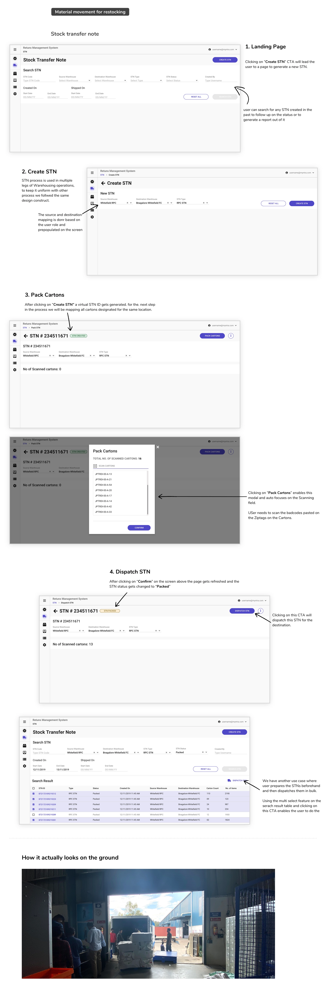
The new stock transfer note flow, including bulk dispatch
insightsRollout and impact
AreaWhat changedImpact
Tracking from hub to RPCCarton-based bulk movement: receiving, post-QC transfer and refinishing~90% tracking of Q1 and Q2 items
Inventory vs marketplace returnsSorting by fulfilment model, plus receiving and segregation by article type99th percentile restock in ~15 days
Inventory statusTwo-level segregation, Q2 completion by supervisors, segregation by QC resultBetter traceability across the chain
RefinishingRefinishing lifecycle, refinishing screens, external refinishing dispatch and receipt60% adoption
Seller and vendor sortingSystem-based second-level sorting for sellers and vendorsSeller returns 99th percentile at 20 days
Non-delivered itemsBasic reconciliation: QC for non-delivered items, shortage and excess resolutionIn progress
schoolReflections
boltThe most radical change since the start
This part of the supply chain hadn’t been rethought since it was built; it had only received small fixes as issues came up. While the products were being built, we kept refining the visual design and functional details. Beyond product metrics, we also tracked how shared patterns for scanning, item movement and QC across the chain changed the way workers behaved.
helpWhat we haven’t done yet
We moved every offline process online, which gives admins visibility. But can we make the work itself better for the people who spend 8 hours a day doing the same job?
Should we add more digital touchpoints to help people use the space better?
How can we help QC staff spot issues without memorizing every rule? Is automation the answer, or a guided process?
Vendors and sellers want to clear inventory quickly, and our restock timelines often clash with their replenishment. How can we give them better visibility?
psychologyWhat could have been better
Myntra’s leadership philosophy is “Make it happen”, and we’re proud of how fast we get things done. On this project, though, I often saw it turn into “We’ll make it happen this way because it’s quicker and cheaper.”
The team (product, tech and ops) focused heavily on measuring outputs rather than outcomes, which led to short-sighted decisions and quick reversals that distracted everyone.
arrow_forwardWhat’s next
In the next phase, we plan to put much more weight on research and testing on the ground. Our users usually have no choice but to use what we build, which makes it tempting to assume we know best. In enterprise supply chain, designers have to be the voice of people who can’t choose their tools and rarely get to suggest improvements.
Am I proud of what we rolled out? Not entirely. But I’m very proud of what we achieved as a cross-functional team. The team is now better placed to learn, and this launch had to happen to show how supply chain tools need to evolve, both in the product and in how we work. Great design takes time and wisdom, and that only happens when the whole team is set up to learn.
A design system for Myntra’s in-house warehouse tools, so first-time digital users could work faster, make fewer mistakes and learn new processes in days instead of weeks.
Mobile appProduct designProcess evaluation
trending_up~10%Productivity gain across warehouse operations
school99%Adoption within a week of launch
inventory_2−12%Bad inventory over 3 quarters
speed~3%Faster item movement over 9 months
apps12 appsWarehouse tools rebuilt on the new system
timer~7 secLost per product to confusing screens, now recovered
My role
Led this design initiative from Jan 2019 to Mar 2020, setting the benchmark for how warehouse tools are built.
Team
15 front-end and back-end developers, two product managers, several operations managers and warehouse admins.
Scale
3 warehouses, with plans for 8 by the end of 2022. Each averages 120,000 sq ft and about 4,000 workers per shift.
summarizeBackground
ERP software has been around since the 1990s, growing from material requirements planning into tools that automate every back-office function and help managers make decisions from measurable data.
Myntra built its own ERP tools to manage inventory and give warehouse workers visibility of their tasks. Every worker uses these in-house tools to make a digital handshake, a barcode scan that transfers ownership of a product to the next person or place.
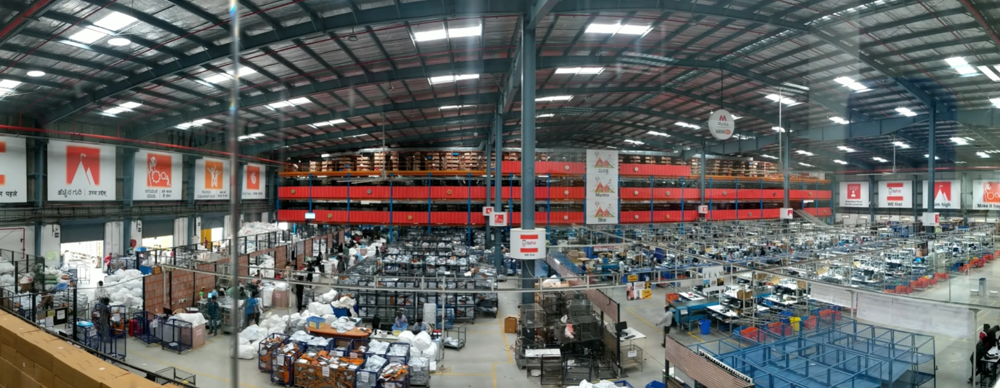
A Myntra warehouse: about 120,000 sq ft and 4,000 workers per shift
qr_code_scannerHow inventory moves
Every product moves between storage, cartons and desks. Because the whole warehouse is mapped with barcodes, scanning is the only way to hand a product over.
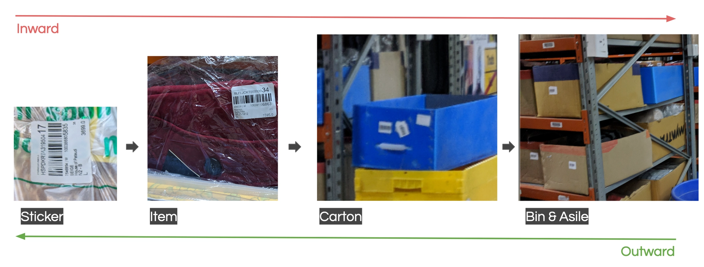
The lifecycle of a product in inventory, inward and outward
reportThe problem
ERP rollouts take a lot of data, training time and money, and with so many moving parts they easily go wrong. Ours did:
schedule
Slower fulfilment. Order fulfilment time rose by 12%.
swap_horiz
More wrong moves. Wrong order movement rose by ~14%.
school
Long training. New workers needed 2–3 weeks to get up to speed.
flagObjectives
menu_bookSet design guidelines for implementation to streamline product development.
patternReuse familiar patterns across operational flows to cut training costs and on-ground errors.
devicesControl where each screen runs. Limit tasks to the handheld or the desktop as the use case requires, for better turnaround, accountability and compliance.
person_searchWho we designed for
We visited the warehouses about twice a month to interview floor supervisors about gaps in the process and to shadow workers using the digital tools.
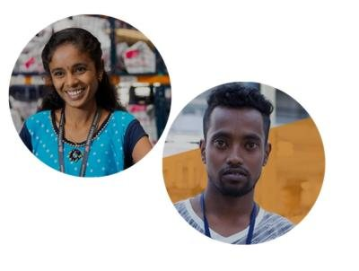
Who are the frontline workers?
Using digital tools for work for the first time
Limited language proficiency
Comfortable with basic Android navigation
Working primarily to support their family
We grouped users into three segments: experts with years of experience on ERP tools, novices new to warehousing, and supervisors who oversee specific processes.
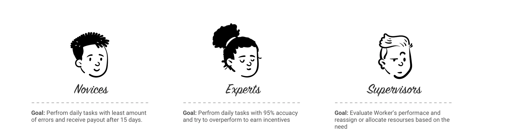
Novices want fewer errors, experts want to beat 95% accuracy for incentives, supervisors want to rebalance work
visibilityWhat shadowing taught us
hourglass_topIt takes almost 2 weeks to learn a new process
paymentsDaily incentives depend on task accuracy
touch_appWorkers interact with the screen over and over during a task
errorInconsistent visual patterns for the same task caused avoidable errors
The conclusion was clear: most needs and pain points could be solved with proper guidelines for our ERP tools. Workers were so busy that the screen was secondary; ERP information architecture felt nothing like the consumer apps they knew; they had no view of their own daily performance; and the tools didn’t explain themselves to new users.
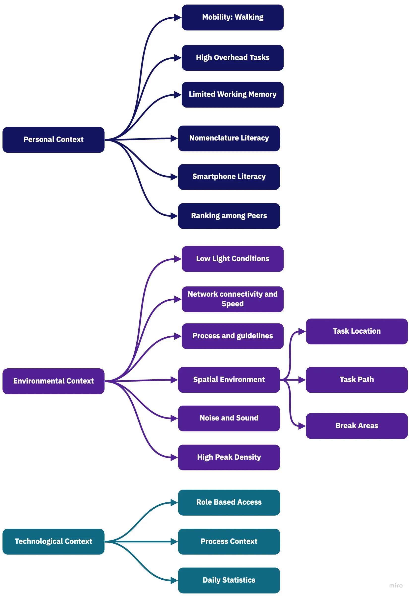
The personal, environmental and technological context workers operate in
devicesThe tools on the floor
Workers carry handheld barcode scanners. Instead of tapping buttons on screen, they press a physical trigger to scan, and the screen shows the result.
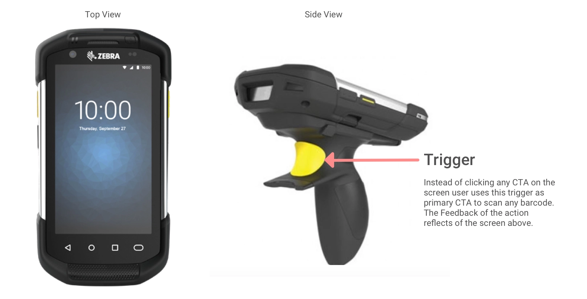
The trigger is the primary action. The screen only gives feedback.
broken_imageThe state of existing tools
Picking, cycle count and bin audit were three mobile web apps doing almost the same thing: scan, then get confirmation. Yet each had a completely different information architecture. Even we struggled to understand them without context, and there were 36+ apps like this.
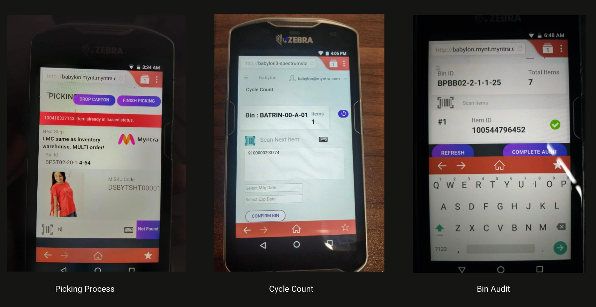
Three apps with the same job and three different layouts
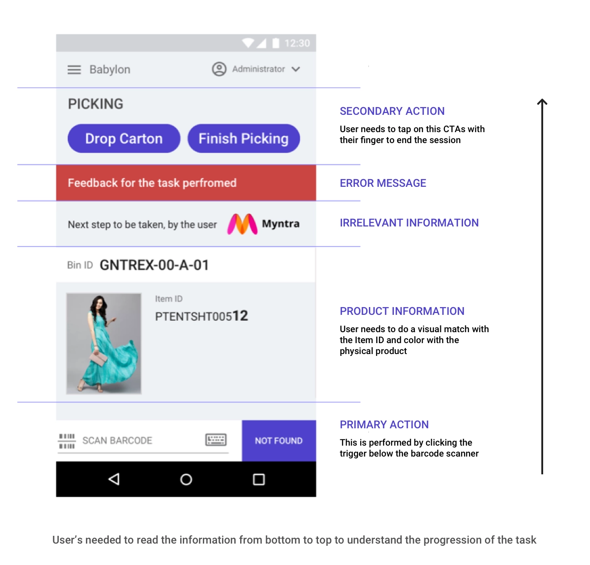
Workers had to read the old screen from bottom to top to follow the task
Pickers are expected to handle ~50 products an hour, including finding them, so feedback after a scan should take under 5 seconds. In reality they spent 15–20 seconds reading the screen, losing about 7 seconds per product.
Productivity dropped across every warehouse, and the losses added up to about ₹2.7 crore a quarter in wrongly processed items and around 10,000 item mismatches a day between order and packing.
lightbulbThe vision
To improve inventory hygiene, and with it business health, we asked the product team to focus on four outcomes:
chatDeliver information clearly to workers.
task_altMake daily tasks seamless.
monitoringLet workers see their own performance.
widgetsBuild a scalable design so every improvement takes developers the least effort.
We then aligned these with product and engineering goals.
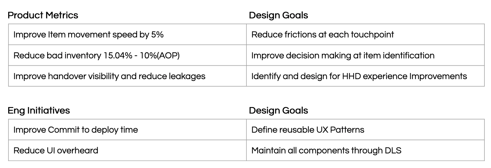
Product and engineering goals paired with design goals
The solution
A design system for warehouse tools
Workers’ needs fall into three layers: daily activities such as wayfinding and handling products, monitoring performance against daily targets, and support and education.
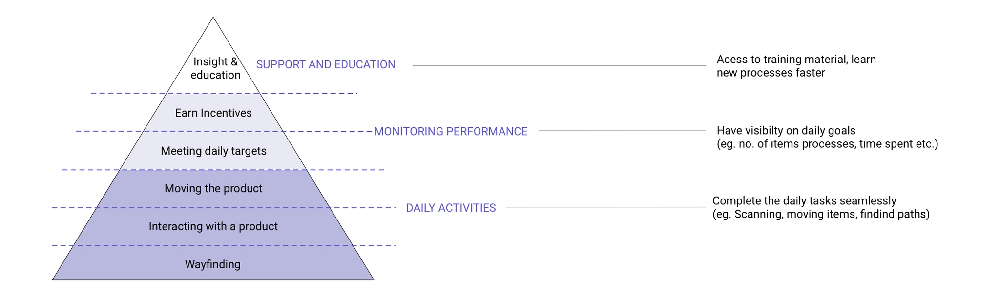
The hierarchy of worker needs
dashboard_customizeStep 1: Conceptualisation
widgetsBreak screens into widgets so each screen shows only what’s relevant, and stakeholders can configure features per process.
categoryBreak widgets into components for scalability and flexibility, while keeping a consistent look and feel.
ruleSet guiding principles that every product or service on the platform must follow, for both experience and reliability.
grid_viewStep 2: Designing the widgets
An internal audit of every mobile ERP app showed we needed a surprisingly small, cohesive set of widgets.
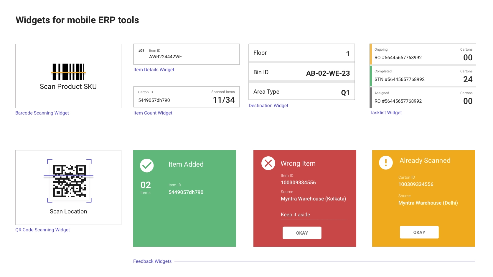
The core widgets for every mobile warehouse tool
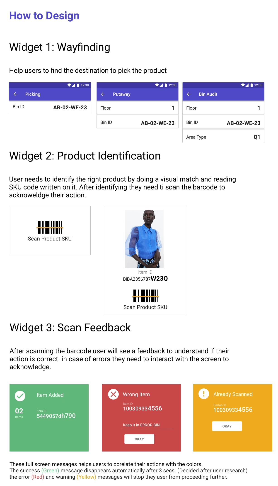
Full-screen, color-coded feedback. Green clears itself after 3 seconds; red and yellow stop the worker until acknowledged.
shopping_basketStep 3: Designing a process
Picking is one of the core warehouse processes, so we started there. We decluttered the information architecture so each screen allows only one action.
The new picking flow. Feedback colors match the cartons workers carry, and exiting shows the day’s count.
stacksStep 4: Scaling up
Before rolling out to everyone, we tested the hypothesis on independent processes. Cycle count, used in all 3 warehouses, was one of them, followed by carton packing.
New cycle count moduleNew carton packing module
rocket_launchRollout
We rolled out in small groups. Phase 1 ran with about 40 workers over 3 months. Encouraged by the results, we widened the experiment, and after 9 months we had rebuilt 12 ERP apps running in all 3 warehouses.
Phase 1: 0.75% of the workforce, ~3% better putaway and 92% adoption in under 5 days. Phase 3: 10% of the workforce and ~8% better picking.
By the end of March 2020, frontline productivity had improved by ~10% and training cycles were shorter.
insightsImpact
GoalHowResult
Item movement speed +5%Less friction at each touchpoint, feedback that’s easy to understand~3% faster across warehouses over 9 months
Less bad inventoryBetter decisions at item identification, new processes for follow-up handling~12% reduction over 3 quarters
Lower training costBetter cross-functional support, self-explanatory tools99% adoption within a week of launch
Less UI overheadAll components maintained through the design language system, new ones reviewed by design and engineeringShorter commit-to-deploy time
schoolLearnings
This project gave me the tools to communicate with stakeholders whose backgrounds are very different from mine. The interview process we followed shaped our ideas far better than before, and supporting research inside complex organizations with many audiences has become an ongoing passion of mine.
Define the basic needs before jumping to solutions. Solutions come with many choices, but the biggest mistake is solving the wrong problem, and by then it’s too late.
Nuclei, a design language system for the tools that run Myntra’s supply chain, used by 18+ in-house brands, 4,000+ partners and the teams behind them.
Design systemDesign strategyWeb
apps12 toolsInternal products running on Nuclei
bolt95%Seller order processing adoption in under 5 days
verified99.7%Returns QC adoption in under 3 days
reviews+10 NPSPartner tiering, Q4 2019
local_shipping<12 hrsOrder-to-pack for store partners
storefront4,000+Partners and 18+ in-house brands served
My role
Led the design language system from Jan to Dec 2019, from principles to library, hand-off and adoption.
Team
Two product designers and four front-end engineers, working with UI engineering on the component code.
Scope
Supply chain tools across pre-order, order placement, post-order and post-delivery.
summarizeBackground
Behind every Myntra order is a stack of internal tools: buying and planning, cataloguing, warehouse inwarding, order management, logistics, returns and customer support. Each was built by a different team at a different time, for a different set of users.
The supply chain functions the system had to serve
person_searchWho uses these tools
The users range from business heads planning a season’s buying to supervisors tracking thousands of workers. They don’t choose these tools; they are told to use them, and they have to be trained before they can.
Rakesh consolidates seasonal buy plans and shares them with stakeholdersNitya checks daily reports to keep her workers on track
reportThe problem
history
Lost trail of design debt. Nobody knew which patterns existed, which were outdated, or why.
devices
Multiple platforms. The same task looked and behaved differently from tool to tool.
forum
Miscommunication. Design and engineering had no shared language, so details got lost in hand-off.
Internal users care about finishing the task, not the interface. But in a supply chain, small details like how a number is rounded can cost millions of rupees.
This changed how we thought about design. Consistency wasn’t about looks; it was about cutting training time and preventing expensive mistakes.
handshakeAligning stakeholders
menu_bookWhy a design language system matters: a shared vocabulary for design and code, so teams stop reinventing the same pieces.
leaderboardStrategic prioritisation: start with the components and tools that touch the most users and money.
constructionProper maintenance: a system only works if someone owns it, reviews it and keeps it current.
ruleDesign principles
01
Clear and simple. Show what the task needs, nothing more.
02
Respect customers. Every internal decision reaches a shopper.
03
Support business. Design for the numbers the team is measured on.
04
Be efficient. Fewer steps, fewer errors.
05
Measure. Every release ships with a metric.
06
Desktop first. Most of this work happens at a desk.
07
Seek perspective. Shadow users, ask engineers, test early.
The system
Nuclei, step by step
paletteStep 1: Core elements
Colors. A small base palette, with each variation made by shifting brightness and saturation rather than picking new hues.
Neutrals for text and borders, purple for brand, and yellow, green and red for status
Typography. A Roboto scale set in REM units, so text scales with the user’s browser settings for accessibility.
The type scale
Spacing and grids. Everything sits on an 8pt grid, with responsive column layouts for large and extra-large screens.
Grid layouts for large and extra-large screens
categoryStep 2: Components defined by behavior
Instead of starting from atoms, we defined components by what they do. A badge isn’t just a colored label; its guideline says where it sits, how labels are written, and which states it can show.
Badge variants in the component libraryBadge guidelines: uppercase, one to three words, past tense
account_treeStep 3: Library and hand-off
The library lived in Sketch. We held a weekly sync with developers and tracked every component’s design, development and documentation status on a shared board.
The Sketch libraryEvery component tracked from design to docs
Each component shipped with a spec covering properties, states and spacing.
Component spec for the expanded navbar
We set goals with stakeholders as quarterly OKRs on JIRA, and engineering built a developer playground where every component could be tried live with its code.
Design language system goals for 2019The developer playground
rocket_launchImplementation
We rolled out in small steps, one tool at a time, and tracked every release through JIRA and Google Analytics.
receipt_longSeller order processing
The redesigned order screen for mDirect sellers reached 95% adoption in under 5 days.
Order details for mDirect sellers
workspace_premiumPartner tiering
A new vendor tier screen showed partners where they stood and what it would take to move up. NPS improved by 10 points in Q4 2019.
Partner tiering dashboard
fact_checkReturns quality check
The returns QC screen reached 99.7% adoption in under 3 days. For store partners, order-to-pack time dropped to under 12 hours.
Returns quality check
schoolLearnings
Atomic design was a useful starting point, but internal tools need more than atoms. The real value came from components that carry their behavior and rules with them.
From atoms to pages
We were still working out three things: keeping the Sketch library maintained, keeping the codebase in step with it, and agreeing on shared names for everything.
insightsImpact
CompanyFewer costly mistakes and faster onboarding across supply chain tools
ProductConsistent experiences across 12 tools, shipped in smaller, measurable steps
DesignersLess time on repeat work, more time on real problems
DevelopersReady-made components and a playground to build from
UsersFamiliar patterns, so learning a new tool takes days, not weeks
Defining the way India’s next billion shops for groceries online
Redesigning Superstore, Meesho’s grocery app, around how first-time internet users in small-town India actually shop, and more than doubling activation along the way.
Mobile webUser researchNBU
trending_up9% → 24%Activation, against a 15–20% target
autorenew12% → 30%Retention, against a 25–30% target
shopping_basket₹150 → ₹430Average daily order value, against a ₹250 target
category62%Orders from the new category tiles for loyal users
add_shopping_cart+15%Cart building after launching the product page
groups3 + 13Designers I led, PMs we partnered with
My role
Led strategic design for Superstore alongside product and business leadership, and grew a team of three designers.
Team
One senior UX designer and two product designers, partnering with 13 PMs, engineering and business.
Audience
Meesho users in tier 2 and 3 cities, 70% of them homemakers who make the household buying decisions.
summarizeBackground
Meesho is India’s e-commerce leader for the next billion users (NBU). To grow beyond fashion, it moved into grocery with Farmiso, later renamed Superstore.
Farmiso started as a standalone, low-cost grocery channel. Kirana shopkeepers in tier 2 and 3 cities each signed up 6–10 customers and used their shops as last-mile warehouses. By late 2021 the model ran in 8 cities with 70,000+ orders a month, but shopkeepers kept dropping off and partner costs kept rising.
In March 2022 Meesho switched to selling directly to consumers and folded Farmiso into the Meesho app as Superstore. That’s when I joined.
lightbulbWhy this problem mattered
sellDiscounts don’t build habits. Indian shoppers try grocery apps for a coupon, then go back to the kirana store when it ends. Startups have burned millions this way. Superstore bet on price over convenience.
homeOld shopping patterns run deep. Most grocery orders are placed by homemakers who aren’t app savvy and enjoy the human side of shopping, bargaining included. Since 70% of Meesho users are homemakers, we had a head start.
insightsFind product-market fit early. Unlike competitors, Superstore didn’t spend heavily on marketing. Its edge was pricing below MRP, and it wanted to prove the model before expanding.
Beyond the product, I also saw skill gaps in my team in research methods, visual design and delivery speed, and set up ways to help them grow into a 0-to-1 environment.
Act one
The MVP didn’t land
Between January and March 2022 the team launched a new mobile web app in two months, before any user research.
The MVP user journey, screen by screen
1 · Land
01Home
A first-order discount, lowest-price deals and a long list of top picks.
!Looked like regular Meesho, so many couldn’t tell this was a grocery store.
02The ₹1 deal
A sticky bar asks her to add ₹50 more to unlock a ₹1 item.
!Pulled in deal seekers who redeemed once and never came back.
2 · Find
03Search
An empty box, with only a delivery-time tooltip for company.
!New users didn’t know what to type. Only 6% searched.
04Category
A plain list of fruits with market price and discount.
!Small images and no browsing cues made a full basket hard to build.
3 · Checkout
05Address
Pick a saved address. Unserviceable ones are greyed out.
06Cart: deal locked
The ₹1 potato stays locked until she adds ₹19 more.
07Cart: deal unlocked
Deal unlocked, savings shown, and she pays at the store after a quality check.
!Baskets stayed small: ₹150 average order value against a ₹250 target.
What a first-time shopper saw in the MVP, and what we later learned went wrong at each step.
Tracked from March to April 2022, every key metric missed its target:
MetricTarget → resultOur hypothesis
Activation15–20% → ~9%Users couldn’t tell grocery apart from regular Meesho shopping, which pushes single-item checkout, and didn’t trust grocery quality online.
Retention25–30% → ~12%The ₹1 deal pulled in deal seekers who redeemed it and left.
Avg daily order value₹250 → ₹150NBU shoppers explore by scrolling, like on YouTube or ShareChat. With weak search and navigation, they couldn’t build a full basket.
person_searchGoing back to users
Neither design nor product had a clear next step, so we stepped back to understand whether online grocery even added value for these customers.
location_onOn-ground study with 15 Meesho power users across Mysore, Nagpur and Bhopal
callPhone interviews with non-Meesho shoppers in the same cities
forumExpert calls with former BigBasket and Flipkart Grocery product and design teams
groupsTwo customer segments
ParameterSegment 1Segment 2
Household incomeUnder ₹20K a month₹20K–50K a month
OccupationDaily wage workers, shop ownersMedium shop owners, white-collar jobs
Buying frequency3–4 times a week, about ₹501–2 times a week, about ₹200–250
Decides what to buyWomenWomen
Decides where to buyMenMen and women
Segment 2 looked most like Meesho’s users, so we focused the MVP experiments on them.
psychologyWhat we learned
storefrontAccess. Shoppers depend on local mandis, kirana stores and pushcart vendors.
paymentsPrice awareness. They know the daily price of staples like onions, potatoes, rice and atta, and budget around seasonal swings.
event_availableIrregular pay. Many are paid every 7 or 15 days, so they stock up on salt, sugar, rice and dal right after payday.
diversity_3Shared decisions. Women choose fruits and vegetables; men, who usually earn, decide where groceries are bought.
timerGrocery is a chore. Unlike fashion, people know what they want and want to spend as little time as possible.
handshakeBusiness decisions
We focused on top-up purchases, which happen more often than monthly shopping, with only 200–250 SKUs against BigBasket’s 750–800. We chose a just-in-time inventory model to save capital, and built our own last-mile network at about ₹15 per delivery to keep prices low.
Act two
Redesigning for how NBU users shop
We broke down the homepage with both data and research insights to see where users dropped off.
Only 2% watched the value-prop video, only 6% used search, and the ₹1 deal drew 70% of first-time users
ruleGuiding principles
01
Keep interactions simple. Build on what users already know and catch their attention early.
02
Match their mental model. Users learn by tapping what they see, so use familiar interactions.
03
One thing at a time. More choices mean more effort. Keep each step to one goal.
sellA better deal for new customers
Business offered all four deal products at ₹1. With a redesigned deal widget, activation rose from ~9% to 24%. 95% of carts started from this widget, and users who added 3–4 deal items checked out within about 15 minutes.
Search moves up, delivery dates are clear, and the deal stands out
searchSolving for discovery
manage_searchSearch
On Meesho, 20% of users search and 80% of them check out. On Superstore only 6% did. New users didn’t know what to type, and their eyes went to the delivery message instead. We highlighted the search bar and added suggestions to get them started.
Recommendations, budget collections and popular items on an empty search
grid_viewCategory navigation
Small thumbnails in a horizontal row made it look like there were only five categories. Larger, image-led tiles changed buying patterns within two weeks: 24% of orders per DAU started there, now 32% for new users, 40% for months 2–4, and ~62% for loyal customers.
Category tiles became the main way people found products
imageProduct cards
Users judged products by their images, so we made thumbnails bigger and price and discount clearer. Unbranded items added to cart rose about 8%, and users scrolled through 30% more products.
Bigger images, clearer price and discount
inventory_2Product page
A new product page let shoppers see high-res images, compare sizes and browse similar products, like walking down a store aisle. Cart building rose 15%, adoption reached 60% in 7 days, and about 72% of surveyed customers liked it.
Sizes and similar products side by side
receipt_longMy Orders
Orders used to live inside Meesho’s main order page. We brought them into Superstore so users could check deliveries, compare what arrived and raise refunds.
Order history built for grocery
insightsImpact
MetricTargetResult
Activation15–20%24%
Retention25–30%30%
Avg daily order value₹250₹430
Business then shifted from top-up baskets to monthly shopping. Last-mile cost rose from ₹15 to ₹40 an order, so breaking even meant about 5,000 orders a month per city.
schoolLearnings
visibilityQuestion assumptions about NBU users. Much of what we believed came from the first billion internet users, whose lives are very different. Those assumptions get built into products and leave people out.
balancePrice and convenience together. “Price over convenience” didn’t hold. For groceries, people want both.
campaignGrowth needs new channels. Meesho’s users got us started, but break-even needed direct acquisition through other marketing channels.
design_servicesDesign shapes behavior. Our first design proved that ignoring users’ mental models backfires. We keep studying how their needs change over time.
Replacing a 180-field spreadsheet with a guided mobile flow, so a new hotel goes live in hours instead of days, with the right location every time.
Mobile appProduct designSupply chain
timer3–6 hrsTo capture a property and take it live, down from 3–4 days
location_onZeroErrors in location and landmark details
payments₹2.5LAverage loss per property between signing and going live
checklist180+ fieldsIn the old spreadsheet, 300+ for bigger hotels
Users
56 quality assurance managers (QAMs) who audit and onboard Treebo properties.
Business goal
Onboarding took a month and cost about ₹2.5 lakh ($3,600) per property before it went live. Make it fast and accurate.
Platform
A new feature inside Prowl, the Android task manager QAMs already use every day.
reportThe old way: a spreadsheet
QAMs filled in an Excel sheet with over 180 fields, and more than 300 for hotels with 20+ rooms.
The catalogue spreadsheet QAMs had to complete
laptop
Paper first. Rather than carry a 3 kg laptop room to room, QAMs wrote in notebooks, and data got lost in the copy.
location_off
Wrong locations. Latitude and longitude were typed by hand, sending guests to the wrong place on maps and OTAs.
hourglass_top
Slow. About 240 questions per property, taking 3–4 working days.
person_searchWhat QAMs told us
We interviewed and shadowed QAMs through the whole data collection process. They needed three things:
categoryInformation grouped into categories.
bookmarkA way to see where they left off and pick up again.
fact_checkA review step before submitting.
The solution
Add a property, inside Prowl
QAMs already use Prowl daily to spot and fix guest-delight issues in the hotels they manage. Since they also look after the properties they onboard, we built “Add a property” right into it.
Prowl, with a new add button on the portfolio screen
account_treeQuestions in categories
QAMs fill in one kind of information at a time, so we grouped the questions into 8 categories, each with subcategories. Answers save straight to the catalogue database and publish once the QAM approves.
Categories, subcategories and the questions inside them
my_locationFixing location accuracy
Standing at the hotel entrance, QAMs tap to detect the location through Google Maps and can drag the pin to adjust it. Most of the address fills in automatically; they only add the micro-market and postal address.
Detect, adjust, done
content_copyReusing room information
Half the spreadsheet was about rooms, but Treebo has only 4 room types and rooms of the same type share amenities. QAMs describe each room type once, and every similar room is pre-filled for them to review.
Rooms by floor, with facilities pre-filled by room type
insightsOutcome
timerCapturing a property and taking it live on Treebo’s website, apps and OTAs dropped to 3–6 hours
verifiedZero errors in location and landmark information
A central booking and reservation system for Treebo
A lightweight web app that let front desk managers across 400+ hotels book, check in and change stays faster, with a third of the training.
Web appProduct designHospitality
apartment416Properties moved to the new system
school3 wks → 1Training time for front desk managers
timer15 → 8 minAverage time for a walk-in booking
support_agent~72%Guest requests now resolved at the front desk
Users
400+ front desk managers (FDMs) who create, manage and edit bookings for every guest.
Org goal
Retire the old, siloed reservation system and train FDMs quickly on a homegrown one.
Goals
Fast and easy for everyone, more control for FDMs, and faster fixes for guest issues.
tablet_androidThe old system: a tablet app
The Android tablet app every property used
paymentsExpensive. Every property needed a tablet, and reliable vendors for them were getting hard to find.
schoolHard to adopt. Properties already had desktops, and FDMs were trained on them. Learning the tablet took about 3 weeks.
stacksDidn’t scale. Built for hotels of up to 20 rooms, it couldn’t check in several guests at once or edit charges at checkout.
sellFixed prices. Walk-in guests like to negotiate, but the app didn’t allow it.
cloud_offUnreliable. A third-party API powered bookings, and updates often didn’t reach FDMs in real time.
badgeThe people behind the desk
At ₹999 ($13) a night, margins are thin. FDMs earn ₹10,000–15,000 a month, about a third of what they would at a 4-star hotel, and most stay only 6–8 months. The old system took almost a month to learn, and slow bookings frustrated guests and staff alike, pulling satisfaction scores down across the country.
person_searchApproach and discovery
We interviewed and shadowed FDMs to find the missing use cases, then set out to simplify the journey, move to our in-house booking engine for real-time updates, and use one visual language with colors that hold up on low-end monitors. We found FDMs needed:
badgeRole-based access, to see who did what.
dashboardA clear view of daily goals and inventory.
syncOne platform shared by the front desk and the central reservations team.
alt_routeSupport for complex flows: multiple check-ins, price negotiation, checkout without an invoice, booking changes and extra charges.
The solution
Hotel Superhero
calendar_view_weekHouse View
A decluttered view of every room and booking, with color-coded alerts for issues and a small ₹ icon for guests who need to pay at check-in, so FDMs know what to do first. Quick View opens a booking without leaving the screen, to check in, see details or record a payment.
House View: inventory, tasks and alerts at a glanceQuick View and the 15-day view
lockRole-based login and audit trail
Properties had 2–3 FDMs sharing one login, which led to security issues and poor incident tracking. OTP login with each FDM’s mobile number fixed that, and an audit trail lets internal auditors see every action on a booking and resolve guest issues quickly.
Login and audit trail
edit_noteCreate, manage and edit bookings
The new booking flow pre-fills booking type and dates, and shows all four room types with prices, so FDMs can negotiate within a range set by the pricing engine. Walk-in booking time dropped from about 15 to 8 minutes.
Creating a walk-in booking
From booking details, FDMs can do whatever a guest asks: add a guest, change rooms or dates, or add a charge. Before, they couldn’t edit bookings at all, which drove up tickets and calls.
Booking details and quick changes
rocket_launchOutcome
Beta · May–Jul 2018Rolled out to 5 properties: one new hotel, three mid-size hotels with 20–30 rooms, and one corporate hotel. Training dropped from 3 weeks to 1.
Rollout · Aug 2018 onRolled out in stages to all 416 properties, and the old system was retired. Calls to the central team for guest changes dropped sharply, with about 72% of tickets now resolved at the front desk.